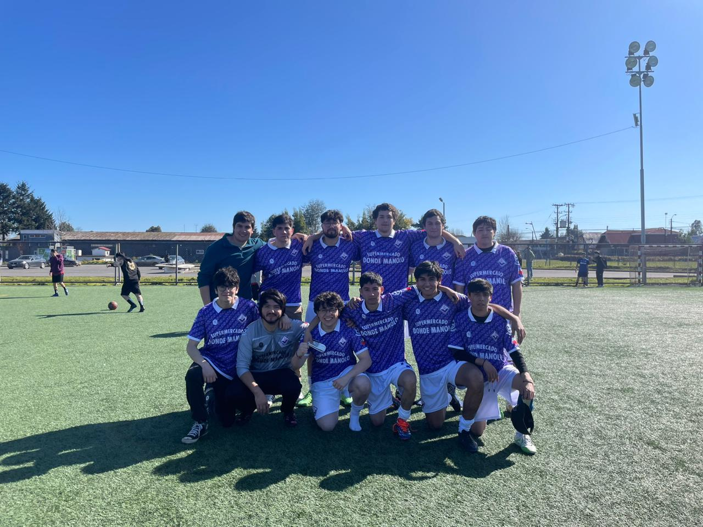

WestRam Informaticos
WestRam Informáticos es un equipo de fútbol fundado en 2024, integrado por un grupo de amigos apasionados por el deporte y la tecnología. Somos estudiantes de las generaciones 2021 y 2022 de la carrera de Ingeniería Informática en la Universidad de La Frontera. Este equipo nació de nuestra amistad y nuestro amor compartido por el fútbol, combinando nuestras habilidades dentro y fuera de la cancha para representar con orgullo a nuestra comunidad universitaria.